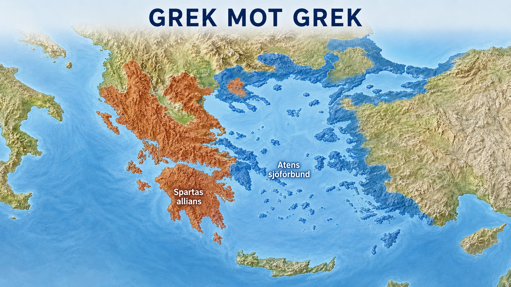

Standardtexten säger att konflikten mellan Aten och Sparta ledde till det peloponnesiska kriget, där greker stred mot greker, och att kriget försvagade hela den grekiska världen så att Makedonien till slut kunde ta över. Det är lätt att läsa den meningen snabbt. Men det som hände var en av historiens stora tragedier: den lysande grekiska världen slog sönder sig själv inifrån — och gjorde det just på grund av det som annars var dess styrka.

Två block, en växande rädsla. Efter perserkrigen var Aten på topp. Staden hade lett försvaret till sjöss, och samlade nu många andra grekiska städer i ett förbund som skulle skydda mot Persien. Men steg för steg förvandlade Aten förbundet till ett eget litet imperium: de "allierade" tvingades betala och lyda, och den som ville lämna slogs ner. Aten blev rikt och mäktigt. Och ju starkare Aten växte, desto räddare blev den andra stormakten — Sparta. Historikern Thukydides, som levde mitt i det hela, pekade ut just detta som krigets djupaste orsak: det var Atens växande makt, och Spartas rädsla för den, som gjorde kriget nästan oundvikligt. Två block stod mot varandra, och misstänksamheten drev dem mot krig.
Ett långt, förödande krig. Kriget bröt ut 431 f.Kr. och pågick i nästan trettio år, med greker som dödade greker år efter år. Tidigt drabbades det trångbodda Aten av en fruktansvärd farsot som dödade en stor del av befolkningen, däribland stadens ledare Perikles. Mitt i kriget gjorde Aten dessutom ett väldigt misstag: staden skickade en enorm flotta för att erövra Sicilien långt i väster — och hela företaget slutade i katastrof, med tusentals döda och förlorade skepp. Kriget slet ut båda sidor, år efter år, utan att någon kunde vinna en avgörande seger.
Ironin i slutet. Till sist vann Sparta — men lägg märke till hur. För att bygga en flotta som kunde mäta sig med Atens tog Sparta emot pengar från Persien, samma Perserrike som alla greker en gång enats mot vid Maraton och Thermopyle. Grekerna tog alltså persiskt guld för att besegra andra greker. Den gemensamma fienden från perserkrigen hade blivit en finansiär i grekernas inbördeskrig. Aten besegrades till slut, dess murar revs och dess imperium föll.
Ingen vann egentligen. Sparta stod som segrare, men vinsten var ihålig. Hela den grekiska världen var utmattad, utblottad och sargad. Ingen enda stadsstat var längre stark nog att ena eller ens dominera de andra länge. Och det är precis där tråden knyts till nästa del: när de grekiska stadsstaterna låg försvagade och sönderslitna efter årtionden av inbördeskrig, stod en utvilad, samlad makt norrut och väntade — Makedonien, med kung Filip och snart hans son Alexander. Grekerna hade gjort sig själva så svaga att någon annan kunde plocka upp dem.
Vad det lär oss. Här återvänder vi till avsnittets själva kärna. Det som gjorde Grekland storartat — de fria, stolta, tävlande stadsstaterna, var och en fast besluten att styra sig själv — var också det som gjorde det omöjligt för dem att hålla ihop. Samma splittring som eldade på idéernas kapplöpning i guldåldern hindrade dem från att förenas när det verkligen gällde. De kunde tävla, tänka och skapa som ingen annan, men de kunde inte förlåta varandra eller underordna sig ett gemensamt mål. Deras styrka och deras svaghet var samma sak.
Och där, i ruinerna efter grekernas inbördeskrig, tar nästa kapitel i den grekiska historien vid: en ung makedonisk kung ska strax ena dem med våld och bära deras kultur ut över halva världen.